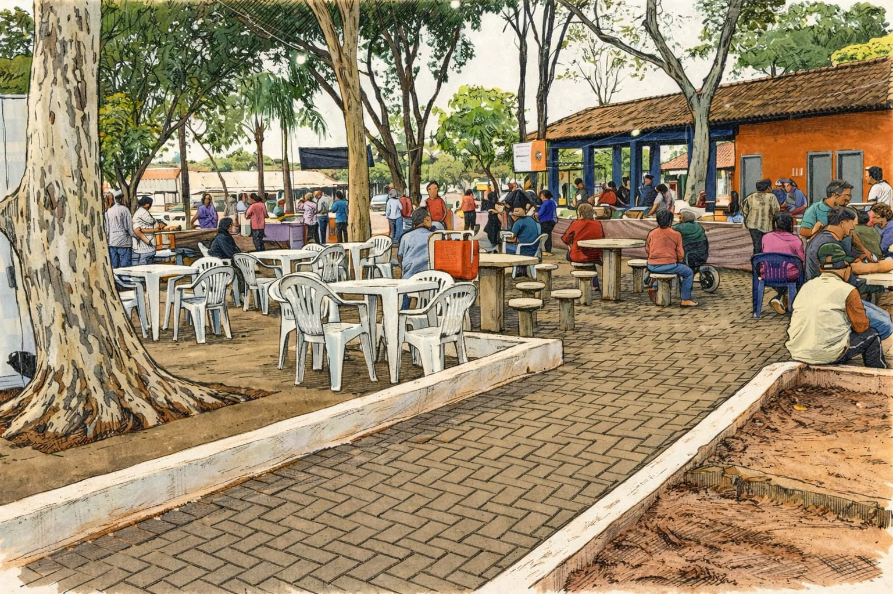

Plataforma Digital para fortalecer a agricultura sustentável e aproximar produtores e consumidores.
Clique e conecte-se!
Leve suas figurinhas repetidas e participe da troca do Álbum da Copa do Mundo na feira do dia 05, a partir das 18h!
Atenção! Hoje é dia de feira!
Local: Praça dos Expedicionários, Santa Cruz de Monte Castelo
Data: 05 de Junho
Horário: A partir das 16h

Produtor especializado em pães e salgados.

Produção de frutas frescas e alimentos naturais.

Produzido por João da Silva

Produzido por Maria Oliveira

Receita preparada com legumes frescos da feira.

Receita saudável feita com verduras orgânicas.
Confira os produtos típicos de cada mês na Feira do Produtor.
Abacaxi, Manga, Melancia, Uva, Figo, Tomate
Abacate, Ameixa, Goiaba, Pêssego, Pera
Abacate, Banana, Goiaba, Limão, Mamão
Abacate, Caqui, Maçã, Pera, Limão
Caqui, Maçã, Laranja, Tangerina, Maracujá
Laranja, Mexerica, Morango, Couve, Brócolis
Morango, Laranja, Tangerina, Couve-flor
Morango, Laranja, Tangerina, Alface
Morango, Amora, Pêssego, Ervilha
Acerola, Amora, Pêssego, Jabuticaba
Acerola, Manga, Melancia, Milho-verde
Manga, Melancia, Uva, Lichia, Figo
Adicione aqui um texto introdutório sobre a importância da feira, agricultura familiar, economia local, sustentabilidade ou qualquer outra informação institucional.
Descrição do indicador.
Descrição do indicador.
Descrição do indicador.
Descrição do indicador.
Espaço para textos explicativos, resultados de pesquisas, informações sobre sustentabilidade, agricultura familiar, preservação ambiental e demais conteúdos.
Espaço adicional para informações institucionais e dados relevantes da feira.